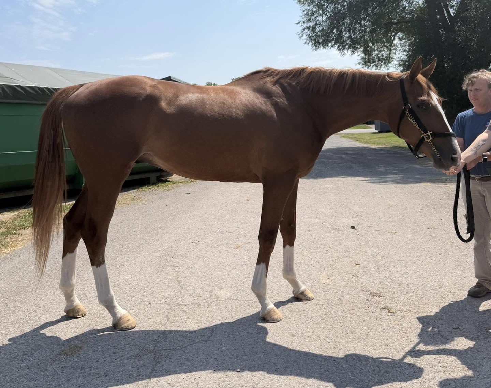
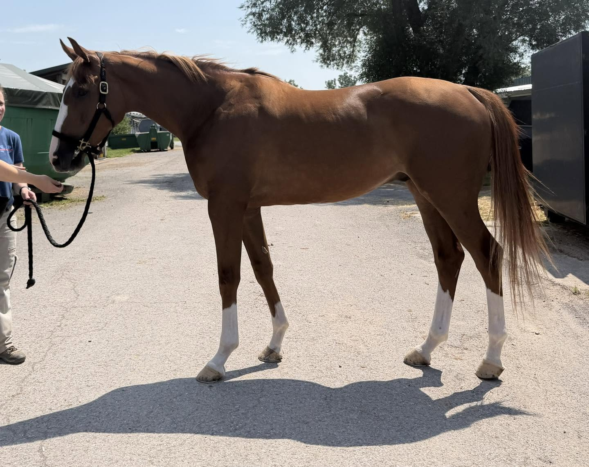
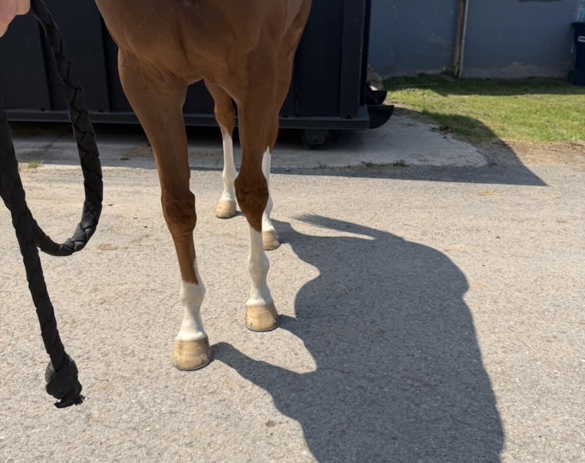
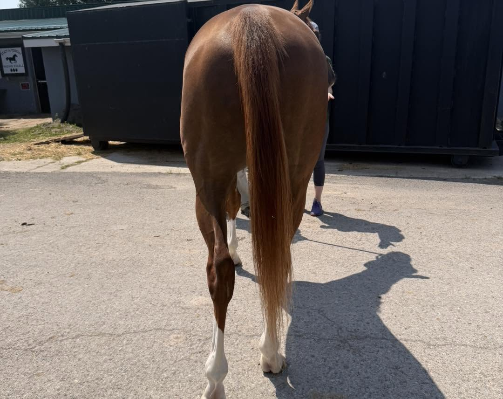
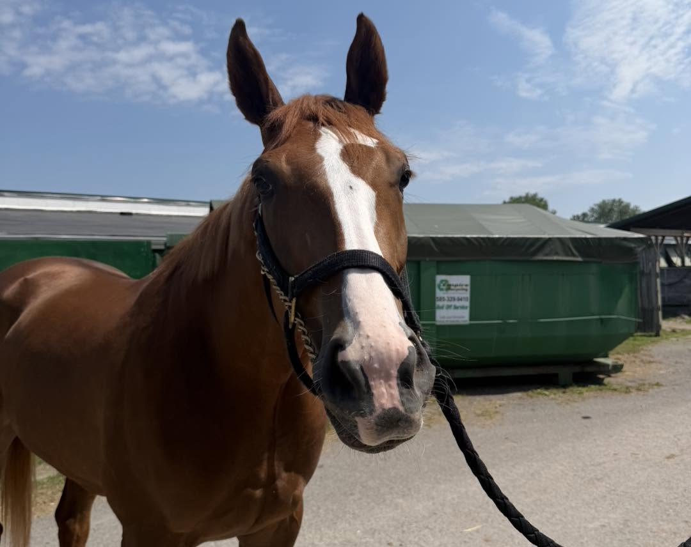
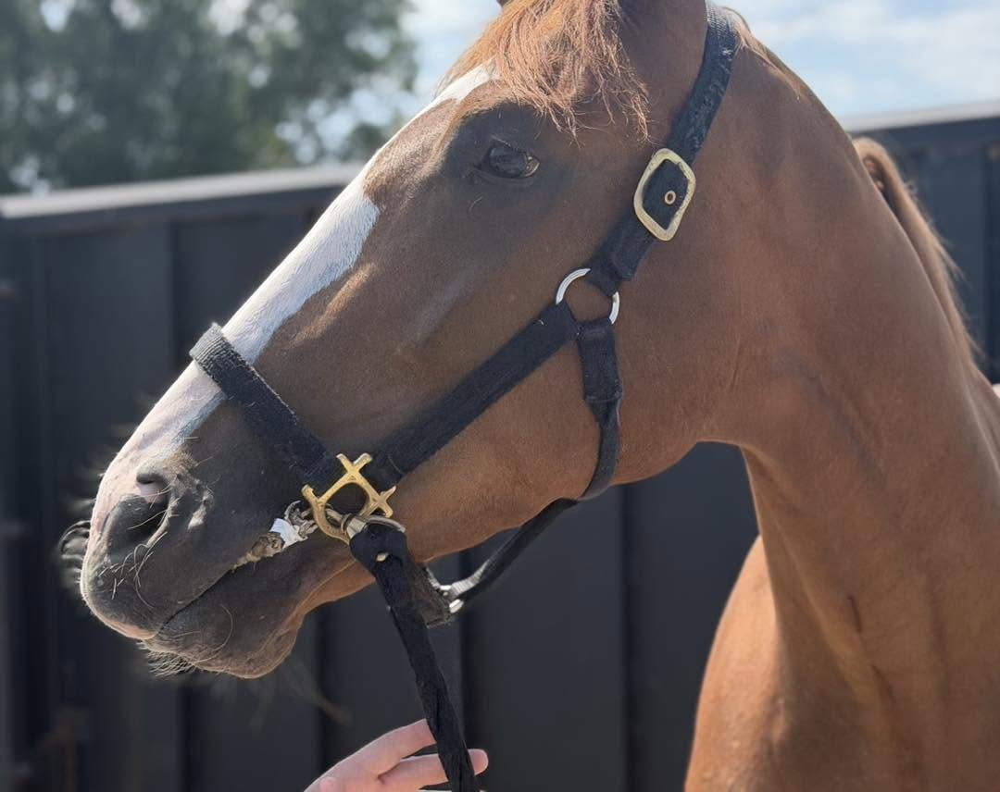
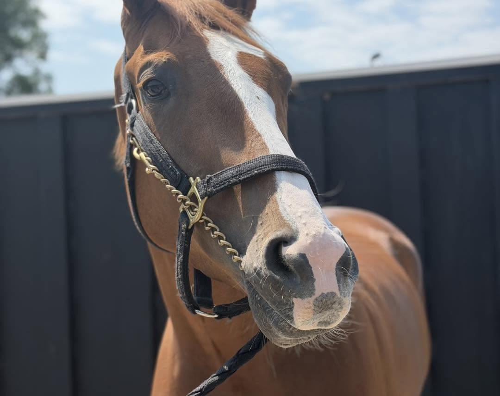
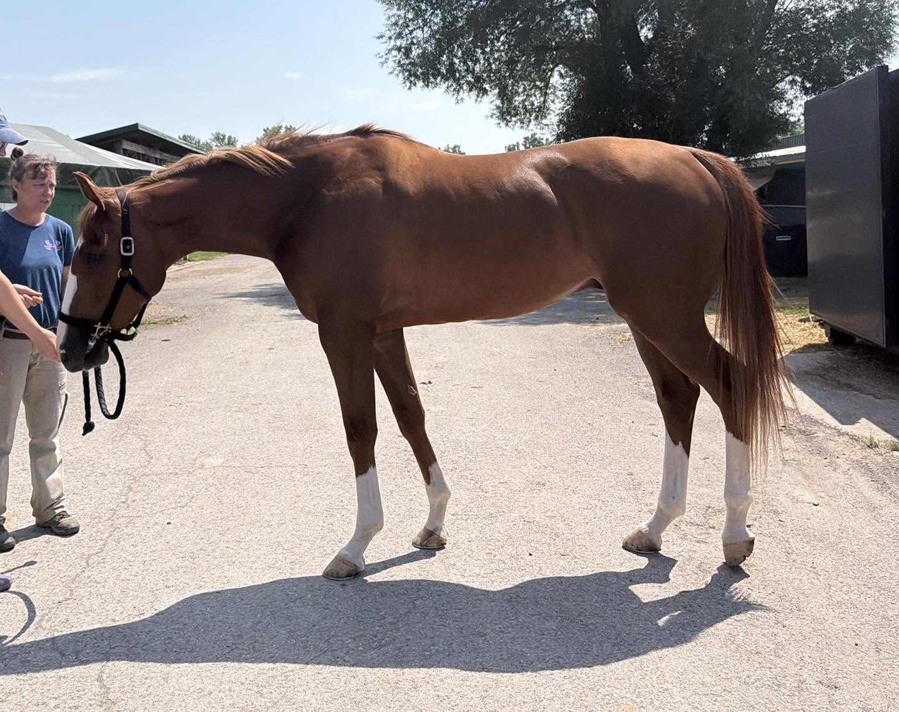
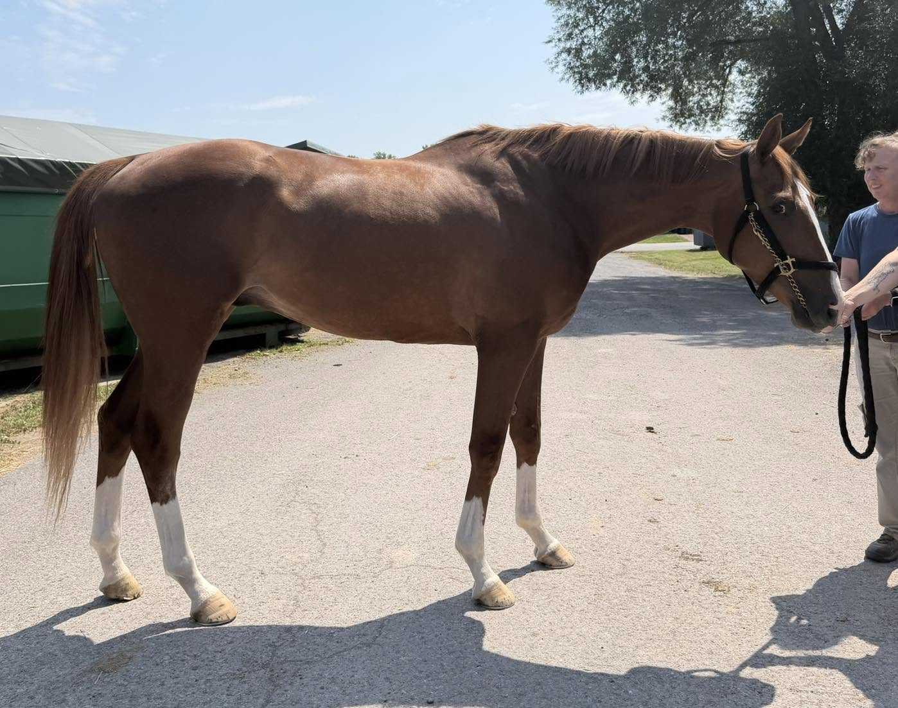

LAGO DI COMO, 2023, 16.2+ h., ch. g. Located at the Finger Lakes Race Track in Farmington, NY (near Rochester, NY).
What is red and white and big and a flashy, Mr. Fancy-pants all-over? Meet Lago Di Como! From his gleaming chestnut coat with its golden sheen to all the flashy chrome on his legs and face, this is a horse that will get you noticed in any show ring. This beloved homebred was recently gelded; as a three-year old as he was deemed to be getting too heavy to be a racehorse. He certainly is a big, solid, beefy boy- and he is still probably growing! His training staff advised his owner that maybe racing wasn’t really going to be his jam- but the owners wanted to run him at least once and give it a shot. As his trainer quipped, “he’s so cute, I just wish he had (racing) talent”. So, anyhow, after his first start, he’s now looking for a new career… and he will be a fabulous sport horse!
He’s described as being a generally good horse- but because he was (until recently) a colt, he has never been turned out with other horses so that’s an unknown. He’s described as young, very athletic, and quick- nothing naughty, and nothing that is an issue for an experienced OTTB rider. But he’s probably not the best candidate for a first time, off-the-track restart. We did find him to be quite a cuddlebug during his photoshoot. He’s a giant peacock and also an affectionate goober. We liked his proportions- shorter back, long underline and sloping shoulder. He’s a big, young, athletic horse with solid bone.
For his video, he was relaxed, steady, and polite. We observed a long, sweeping walk with a big overstep and a rhythmic, workmanlike jog.
Lago Di Como is by Snowtrouble (Tapit) with Storm Cat and Blushing Groom appearing on his sire side. He’s out of a Skip to the Stone mare with Halo and Damascus appearing on the dam side of his pedigree.
Please note that references will be required and checked prior to being able to purchase this horse. Please see our post pinned to the top of our FB page for more information.
A PPE is always recommended. For information about vet practices available to do PPEs, and other important information about the buying process, please see the How to Buy menu tab on our website, for info about vets, shippers, etc. at: http://fingerlakesfinesttbs.com/buying-a-finest-horse/ (http://fingerlakesfinesttbs.com/buying-a-finest-horse/)








